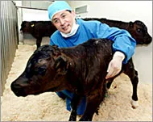

The year is 1996, and Dolly the Scottish sheep has just made scientific history - being the first exact DNA replica of another sheep. This impressive, yet dystopian feat was made possible by extracting the nucleus from the cell of one sheep and placing it into the egg from another. A third sheep then underwent the usual five-month pregnancy and birth of Dolly – technically giving her three mothers. Cloning sheep (albeit impressive) isn’t particularly useful. However, the science behind it was revolutionary, bringing the possibility of cloning patient-specific organs – something that could revolutionise healthcare as we know it.
1997- South Korea is experiencing huge economic struggles. Many of the largest Southeast Asian corporations are going bankrupt, leaving over 1.5 million South Korean citizens without jobs. In a plea to fix this disaster, Kim Dae-Jung has been elected president. Knowing just how competitive the neighbouring counties would be in the tech market, he realised that South Korea would need something new, a niche to seize the world’s attention- something like Dolly the sheep.
A young man named Hwang Woo-Suk, a budding veterinarian with a PhD in animal reproduction, had become increasingly fascinated by this field. Before long, he had become the first ever Korean to clone a cow via IVF – helping its mother give birth live on TV. After this spectacle, Hwang continued his research in animal cloning– quickly making him a national celebrity and Korea’s best chance at winning a Nobel Prize in science. He promised to clone an endangered Siberian tiger as well as a cow immune to mad cow disease – both of which fell through. However, public opinion of him didn’t falter. Soon after these incidents, he gave the new President Roh Moo-Hyun a tour of his lab, introducing him to a dog saved by a stem cell transplant, something that Roh described as “not a science, but rather, magic.”

Though the general public was amazed by Hwang’s ‘miracles’, the scientific community was beginning to question his work. He had never actually published a scientific report about any of his research, giving him little evidence to support that his clones were actually carbon copies. He had to change this- but how? Despite his fame in South Korea, Hwang was nowhere near reputable enough to be published in any globally renowned journals. This is where Gerald Schatten comes in– a well-known American scientist, at the time researching embryo cloning in primates. The two were fast friends, determined to make human embryo stem cell cloning a reality with the hopes of being able to create patient specific organs. This would solve the issue of organs from donors being rejected by the body. At this time, new US president George W Bush banned the research of human embryos due to ethical and religious reasons. This could have been a huge setback for Schatten, however, he made a deal with Hwang that he could share his lab in South Korea as long as he got Hwang published in “Science,” a highly celebrated journal.
For some time after, all was going well for Hwang. He cloned a dog named “Snuppy,” getting him selected as the first ‘Supreme Scientist’ of South Korea. His work in stem cells inspired the founding of The World Stem Cell Hub of which he became director. On opening day, over three thousand ill patients signed up for stem cell treatment from Hwang. He was a national hero, however what goes up must come down. The simple question of where Hwang’s egg cells were acquired sparked the beginning of the Supreme Scientist’s exponential downfall as claims began to arise of him not only abusing his female coworkers (this was later debunked), but also faking the results of his research.
PD Su-Cheop was the frontrunner of the investigation into Hwang’s scandal, being quick to interrogate his lab partners. A junior researcher admitted to manipulating data, proving that Hwang had only been able to clone 2 patient specific stem cells rather than the 11 he had claimed. This was detrimental to Hwang’s reputation. PD Su-Cheop also asked for DNA samples which, when analysed, didn’t match those in Hwang’s Science report. It was beginning to look like Hwang was a fraud, however the public was still on his side. It was argued that the researcher was forced to lie about the data manipulation and that PD Su-Cheop was not sufficiently qualified to analyse the DNA samples. The researcher then stated that he had indeed been forced to lie and that Hwang had in fact been able to clone all 11 stem cells. Before long, Su-Cheop was labelled ignorant and the case was dropped until 2007, when a user on the biomedical website “BRIC” posted evidence of the stem cells and DNA being photoshopped. This was spreading like wildfire and resulted in a re-examination of Hwang’s research papers. This unfortunately wouldn’t last long as only two days later Schatten would ask to have his name removed from Hwang’s reports, claiming that they included scientific fraud. Hwang attempted to regain the public’s trust via an apology and claimed that he had still taken stem cells from human embryos and had the technology to do so again. This was untrue- he had never created a single one. All of his results on human embryos had been fabricated. It was over.
Hwang was quickly fired from Seoul National University and charged with misappropriating research funds. In a way, Hwang got every bit of fame he wanted- his scandal shook the world and left a huge dent in South Korea’s scientific reputation. Although this event is in no way current, it sends a crucial, but daunting message to us all: be careful what you wish for. It just might come true.